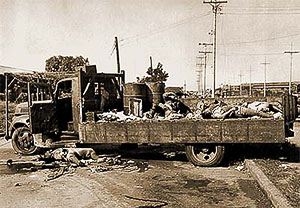
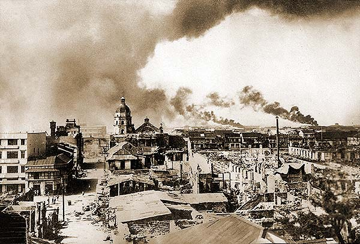

|
j
a v a s c r i p t |
Pg.1/3
February 9, 1945
Biked downtown with Campos and Dr. Ayesa via Arlegui to check San Miguel Brewery. Japanese snipers forced us off our bike three times — the last shot hit a bystander in the thigh. We turned into Legarda, saw the ruins of one of last night's six or seven fires, and spoke to people whose houses survived by sheer luck. A Filipino in uniform told us that the Japanese were killing all males over 15 on the south side — quite fantastic — but Annie Taylor had said the same thing.

Journey Interrupted
At Santo Tomas, a lady across the fence told us that apart from the Cabanatuan POWs, another 5,000 were rescued somewhere up north! I found no one who could confirm it; the MPs at the gate hadn't heard anything. Went to Bilibid to try to get a pass into Santo Tomas but they weren't issuing any. So on to CIC† via Azcarraga, where I noticed the Japanese bodies were gone though the stench remained. A very burned Japanese truck was still there with some sabers and helmets beside it — one with two holes shot clear through. I almost picked it up as souvenir but changed my mind. The CIC were busy investigating Japanese and collaborator cases, so I returned to Santo Tomas and asked Wendel and Howie to check the story. On the way home we passed Figueras's Chrysler, now marked "guerrillas" but without any official designation. Guerilla headquarters all over town display their names with pride, like "USPIF-officially recognized" or "Markings Fil-Americans," but Figueras "unit" is unnamed. Just like that, Figueras' turned his pro-Japanese gang into a guerilla outfit — and boy, do they look trigger-happy! What hurts is the lack of news — everything going around is sensationalized, improbable and impossible to check. A girl said that the Japanese mined the Water Reservoir dam at Novaliches with 15 tons of dynamite, but the Americans arrived twenty minutes before they could blow it up. Another report said the 80 casualties at Santo Tomas were mostly girls; 15 died while others lost hands or something else. Some of the cases have already left for the U.S. on a 60-hour air service.

Binondo in Ruins
† Counterintelligence Corps |
|
|
|
|